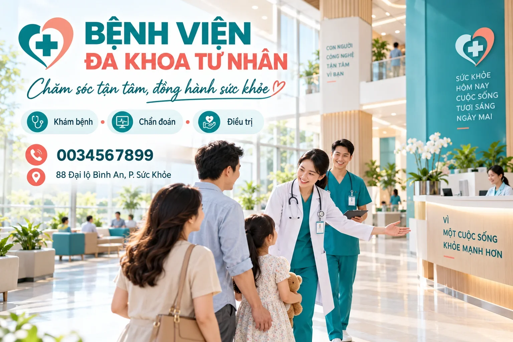

Bệnh viện An Tâm — hệ thống 18 chuyên khoa với 120+ bác sĩ, điều dưỡng. Đăng ký khám online, bộ phận tiếp đón gọi xác nhận trong 15 phút; khoa Cấp cứu tiếp nhận 24/24 tất cả các ngày.

In trên tấm poster chào đón của bệnh viện — cũng là ba điều người nhà cảm nhận đầu tiên.
Chọn theo nhu cầu: khám, chẩn đoán, điều trị, mẹ và bé, hay cấp cứu ngoài giờ.
Gọi trước khi di chuyển: điều phối hướng dẫn xử lý tại chỗ và chuẩn bị đón bệnh nhân từ sảnh A.
Ba bước dưới đây không đặt lịch tự động — phiếu gửi về bộ phận tiếp đón, bệnh viện gọi xác nhận khung giờ còn trống.
Phiếu gửi về bộ phận tiếp đón — không thanh toán, không đặt lịch tự động.
Lấy mẫu buổi sáng, tư vấn kết quả theo hẹn — người khám nhận báo cáo đầy đủ.
Giá tham khảo 2026 — báo chính xác sau tư vấn, tùy hạng mục bổ sung theo tuổi và tiền sử.
An Tâm khởi đầu từ một phòng khám đa khoa khu Thủ Đức, nay là bệnh viện tư nhân đa khoa với 18 chuyên khoa, 3 tầng phòng khám và 120+ bác sĩ, điều dưỡng trực quanh ngày. Mỗi tuần, hội đồng chuyên môn duyệt lại quy trình tiếp đón và theo dõi sau điều trị — phần việc không ai thấy nhưng người bệnh cảm nhận được.
Người nhà bệnh nhân nội trú được nhận cuộc gọi báo tiến triển theo mốc cố định mỗi ngày; người khám ngoài giờ có khoa cấp cứu làm "lưới an toàn" phía sau.
— TT.BS. Nguyễn Minh An, Giám đốc chuyên môn —
"Đăng ký khám online tối thứ sáu, sáng thứ bảy có cuộc gọi xác nhận giờ — đúng 15 phút như hẹn, khỏi ngồi chờ số."
Chị Lê Thu Trang32 tuổi · khám tổng quát"Bố tôi nằm nội trú sau mổ. Mỗi ngày 16 giờ bệnh viện gọi báo tiến triển — cả nhà ở xa mà yên tâm hẳn."
Anh Phan Quốc Bảongười nhà bệnh nhân nội trú"Khám thai ở gói mẹ bé: bác sĩ đọc kỹ sổ, hẹn mốc siêu âm, nhắn lịch qua Zalo đúng hẹn. Không gian sạch, bé ghé không khóc."
Chị Đặng Mỹ Duyênsản phụ · khoa Mẹ và bé"Đêm con sốt cao co giật, gọi hotline được điều phối ngay, tới nơi đã có xe lăn chờ ở sảnh A. Chấm đủ sao nếu bãi xe rộng hơn."
Cô Hồ Thị Sáng65 tuổi · đi cùng cháu cấp cứu